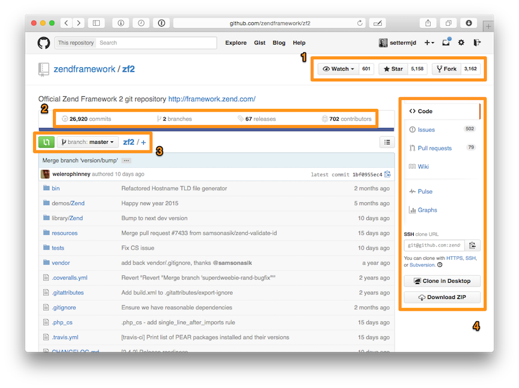

Git e GitHub são duas ferramentas muito interessantes para os desenvolvedores. O Git, apesar de sua complexidade, é a ferramenta de controle de versão favorita da maioria dos profissionais, de web designers a desenvolvedores kernel. Já o GitHub é a plataforma de hospedagem de código mais utilizada do mundo e onde você encontrará de tudo, de experimentos lúdicos e simples ao próprio kernel do Linux. Ambas as ferramentas são extremamente sofisticadas, proporcionando uma vasta gama de funcionalidades. E, para extrair o máximo de cada uma, é preciso estar preparado para as complexidades que se apresentarão pelo caminho.
Para facilitar o aprendizado, utilizarei capturas de telas de um projeto do GitHub. Sim, essa ferramenta é muito mais que um simples repositório de projeto. Mas é nele que você passará a maior parte do tempo.
Você está vendo um projeto de site. Na parte de cima, no ponto 1, estão listados o nome do projeto, quantas pessoas o estão visualizando, quantas pessoas aderiram e quantas solicitaram permissão para fazer mudanças e contribuir com o projeto.
O ponto 2 mostra o número de commits do branch atual, o número de branches, o número de releases e o número de colaboradores. No ponto 3 fica o coletor de branches, uma lista dos arquivos do projeto e quando os últimos commits foram realizados.
Ao lado direito, ponto 4, temos as opções de navegação. São elas:
Por fim, ainda no lado direito, fica o link para o repositório URL. Se quiser clonar esse projeto, essa é a URL que você deve passar pelo git clone.